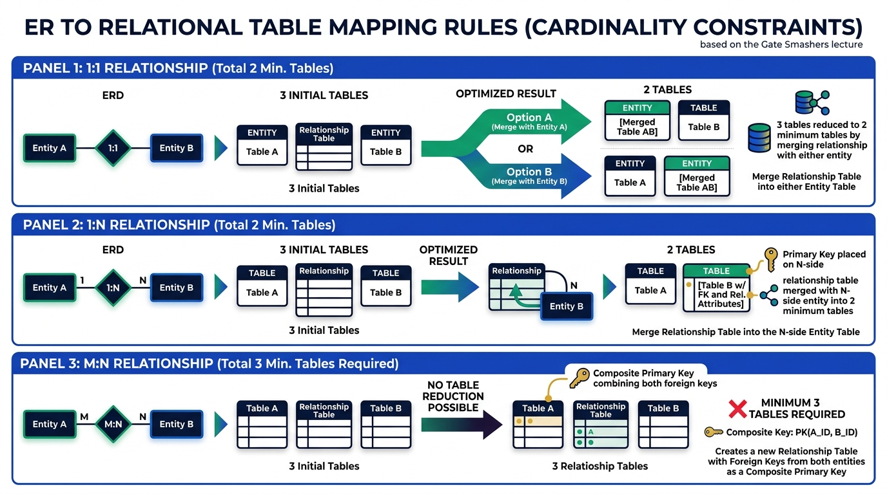

Relationships & Cardinality Constraints in DBMS
Master ER-to-Relational mapping rules for 1:1, 1:N, and M:N Cardinality Constraints. Learn how to determine Primary Keys for relationship tables and calculate the minimum number of tables required.
💡 1. Fundamentals of Relationships in ER Modeling
Degree of Relationship Set
The Degree of a relationship set refers to the number of entity sets participating in that relationship:
- Unary (Recursive) Relationship (Degree 1): Relationship within a single entity set (e.g.
EmployeeManagesEmployee). - Binary Relationship (Degree 2): Relationship between 2 entity sets (e.g.
StudentStudiesCourse). Most common in exams! - Ternary Relationship (Degree 3): Relationship between 3 entity sets (e.g.
Doctor,Patient, andMedicineconnected by Prescribes).
Descriptive Attributes
Attributes associated directly with a Relationship Set rather than an entity set (e.g. Date_of_Purchase on the Gives relationship between Customer and Order).
🖼️ Visual Diagram: ER to Relational Table Mapping Rules
The diagram below illustrates the exact table mapping rules, primary key selection, and table reduction logic for 1:1, 1:N, and M:N relationships:

1️⃣ 2. One-to-One (1:1) Relationship Mapping
In a 1:1 Relationship, an entity in set A is associated with at most one entity in set B, and vice versa (e.g. Employee -- [Manages] -- Department).
Relational Mapping & Primary Key Rules:
- Initial Tables (3 Tables): Table 1 (
Employee), Table 2 (Department), Table 3 (Managesrelationship table containingEIDandDIDas Foreign Keys). - Primary Key of Relationship Table: In a 1:1 relationship, neither column contains duplicate entries! Therefore, EITHER
EIDORDIDcan serve as the Candidate Key / Primary Key. - Table Reduction (Merging): Since either foreign key is unique, you can merge the relationship table into EITHER the
Employeetable OR theDepartmenttable. - Minimum Relational Tables Required: 2 Tables.
1️⃣➔N 3. One-to-Many (1:N) / Many-to-One (N:1) Relationship Mapping
In a 1:N Relationship, one entity in set A can be associated with many entities in set B, but an entity in set B is associated with at most one entity in set A (e.g. Customer -- [Gives] -- Order).
Relational Mapping & Primary Key Rules (Exam Favorite ⭐):
- Initial Tables (3 Tables): Table 1 (
Customer), Table 2 (Order), Table 3 (Givesrelationship table containingCustomer_IDandOrder_Noas Foreign Keys). - Primary Key of Relationship Table: The 1-side (
Customer_ID) will repeat in the relationship table whenever a customer places multiple orders. However, the N-side (Order_No) is unique per order! Therefore, the Primary Key MUST be the Primary Key on the MANY (N) side (Order_No). - Table Reduction (Merging Rule): The relationship table can ONLY be merged into the table on the MANY (N) side (i.e. merge
GivesintoOrder). You CANNOT merge into the 1-side (Customer) because it would cause row duplication! - Minimum Relational Tables Required: 2 Tables.
N ➔ M 4. Many-to-Many (M:N) Relationship Mapping
In an M:N Relationship, an entity in set A can be associated with many entities in set B, and vice versa (e.g. Student -- [Studies] -- Course).
Relational Mapping & Primary Key Rules (Exam Star ⭐):
- Initial Tables (3 Tables): Table 1 (
Student), Table 2 (Course), Table 3 (Studiesrelationship table containingRoll_NoandCourse_IDas Foreign Keys). - Primary Key of Relationship Table: Both
Roll_No(a student taking multiple courses) andCourse_ID(a course taken by multiple students) contain repeating values! Neither single attribute can be a Primary Key. Therefore, the Primary Key MUST be a Composite Primary Key combining BOTH foreign keys:(Roll_No, Course_ID). - Table Reduction Rule: NO TABLE REDUCTION IS POSSIBLE! You cannot merge
StudiesintoStudent(violatesRoll_NoPK uniqueness) nor intoCourse(violatesCourse_IDPK uniqueness). - Minimum Relational Tables Required: 3 Tables (Must retain a separate relationship table).
🔗 5. Participation Constraints (Total vs Partial)
- Total Participation (Full / Mandatory): Every entity in the set must participate in at least one relationship instance. Represented by a Double Line in ER diagrams (e.g., Every
OrderMUST be given by aCustomer). - Partial Participation (Optional): Some entities may not participate in the relationship. Represented by a Single Line (e.g., Not all
Employeesmanage aDepartment).
NULL values. If participation is Partial, foreign key columns may contain NULL values for non-participating rows.
⚖️ Master Summary: ER to Relational Mapping Rules
| Cardinality Constraint | Primary Key of Relationship Table | Table Merging Rule | Minimum Relational Tables | Exam Memory Shortcut |
|---|---|---|---|---|
| 1 : 1 | Either Primary Key (PK_A or PK_B) |
Merge with EITHER Entity A or Entity B | 2 Tables | Flexibility: Merge anywhere |
| 1 : N | Primary Key on the MANY (N) Side | Merge with Entity on the MANY (N) Side | 2 Tables | Always go to the MANY side |
| M : N | Composite Key: (PK_A, PK_B) |
CANNOT MERGE (Separate table required) | 3 Tables | No reduction possible (3 tables) |
🎯 GATE, UGC-NET & IBPS SO IT Officer — Exam Focus PYQs
Q1: In a 1:N relationship set between Entity A (1 side) and Entity B (N side), what is the Primary Key of the relationship table?
👉 Answer: The Primary Key of Entity B (the N side).
Q2: What is the MINIMUM number of tables required to represent an M:N binary relationship in an RDBMS?
👉 Answer: 3 Tables (No reduction allowed).
Q3: What is the MINIMUM number of tables required to represent a 1:1 relationship between two entity sets?
👉 Answer: 2 Tables.
Q4: In an M:N relationship table, how is the Primary Key defined?
👉 Answer: As a Composite Primary Key combining the foreign keys from both participating entity sets.